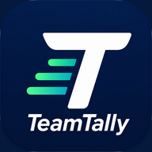
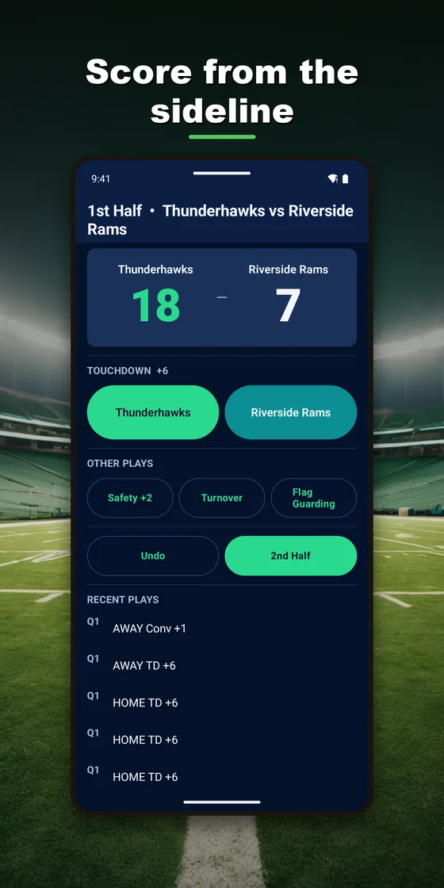
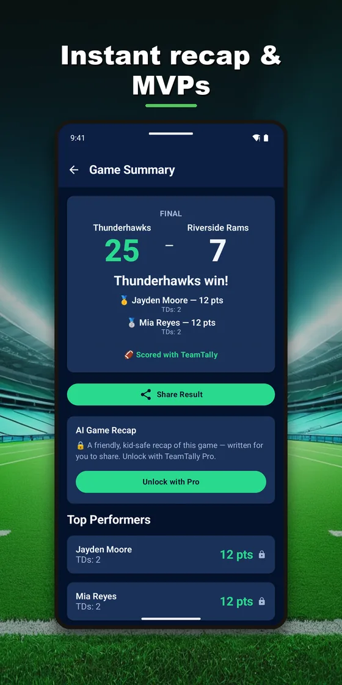
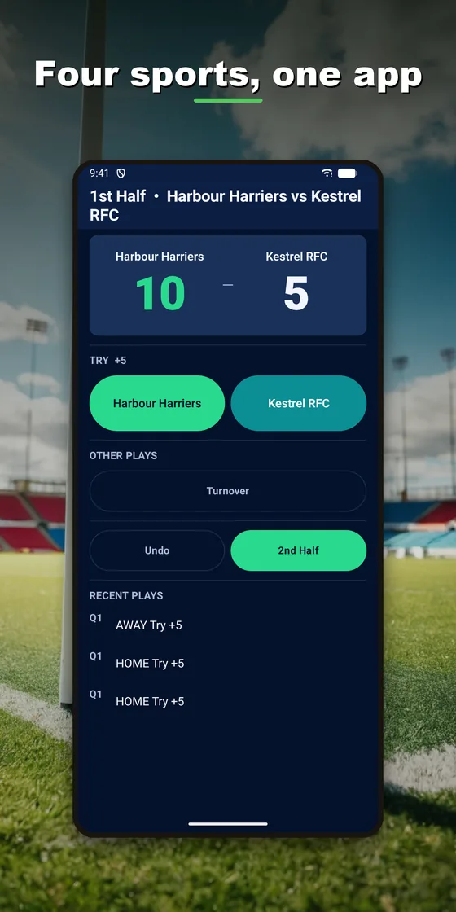
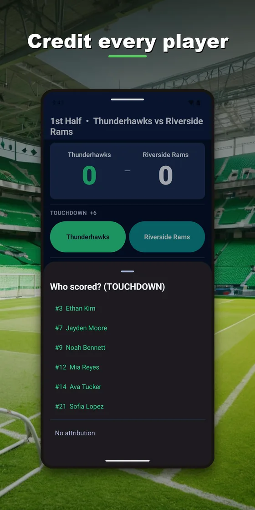
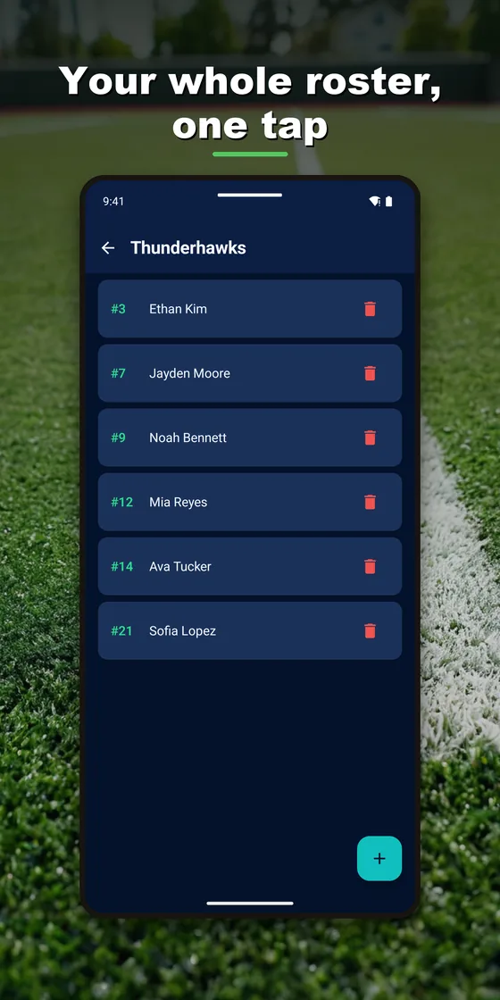

Sideline scoring and player stats
Tallyside
The fast, no-fuss way to score a game and track every player's stats. Built for youth and rec coaches, and for the parent keeping score in the stands.
Free, with an optional Pro upgrade.





What it does
- Four sports, one appFlag football, tag and rookie rugby, 7v7 football and ultimate frisbee — scoring and stats adjust to match.
- Tap to scoreTouchdowns, tries, goals, conversions, flag pulls and interceptions, scored as they happen. Undo instantly.
- Stats without the spreadsheetPer-player lines and team totals compiled for you, game by game and across the season.
- A card for the team chatAn instant game summary with top performers, ready to share in a tap.
- Works on a dead fieldNo account needed and no signal required — your data starts on your device.
- Sync when you want itSign in with Google to carry teams and seasons across phones and tablets. Optional, always.
Something missing or wrong? There's a Report a Bug button
in the app's settings, and the links below reach the same place. Bug reports and requests are
what set the roadmap.
Join the Discord · Support · Privacy policy
← All apps